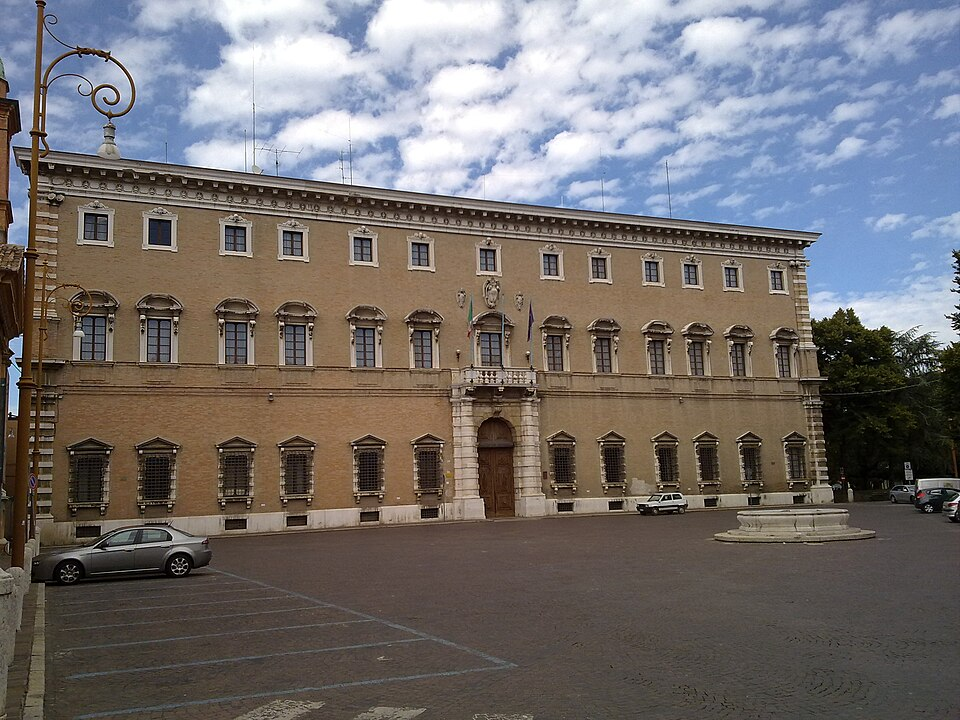
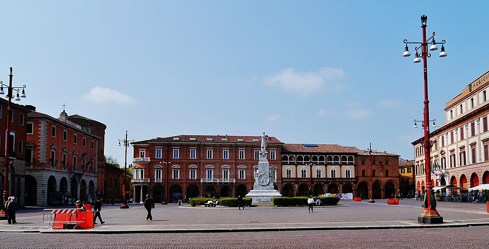

Forlì
Einführung
Nach seinem Exil aus Florenz im Jahr 1302 fand Dante Alighieri Zuflucht in mehreren Städten Mittel- und Norditaliens, darunter Forlì, ein wichtiges ghibellinisches Zentrum in der Romagna. Sein Aufenthalt in der Stadt fällt in die frühen Jahre seines Exils, innerhalb des politischen Netzwerks der weißen Guelfen. Im Jahr 1303 wurde Dante von Scarpetta Ordelaffi empfangen, der zahlreiche geflohene Florentiner aufnahm.
Orte in Verbindung mit Dante
- Porta Schiavonia
- Palazzo Paulucci di Calboli d’Aste
- Piazza Saffi
[Interaktive Karte hier]
Porta Schiavonia
Die Porta Schiavonia war einer der Hauptzugänge zur mittelalterlichen Stadt für Reisende aus der Toskana, entlang des Montone-Tals. Heute symbolisiert sie noch immer den Eingang nach Forlì entlang des Dante-Wegs. An der Fassade eines nahegelegenen Gebäudes befindet sich eine Tafel mit einem Zitat aus der Commedia über den Fluss Montone:
"Gleich jenem Flusse mit dem eignen Gang,
Deß Fluten ostwärts vom Berg Veso toben
Entströmt dem linken Apenninenhang,
– Das stille Wasser heißt er erst dort oben,
Dann senkt er sich und wird bei Forli bald
Des ersten Namens wiederum enthoben –"
Divina Commedia, Inferno, XVI, 94-99
Deß Fluten ostwärts vom Berg Veso toben
Entströmt dem linken Apenninenhang,
– Das stille Wasser heißt er erst dort oben,
Dann senkt er sich und wird bei Forli bald
Des ersten Namens wiederum enthoben –"
Divina Commedia, Inferno, XVI, 94-99
.JPG) Porta Schiavonia
Porta Schiavonia
Porta Schiavonia
Porta SchiavoniaFoto: Perkele at Italian Wikipedia, CC BY-SA 3.0, via Wikimedia Commons
Palazzo Paulucci di Calboli d’Aste

Palazzo Paulucci di Calboli d’Aste Palazzo Paulucci di Calboli d’AsteFoto: piero drago, CC BY-SA 3.0, via Wikimedia Commons
Der Palazzo Paulucci di Calboli d’Aste, in seiner heutigen Form im 18. Jahrhundert erbaut, gehört zur Familie Calboli, einer der bedeutendsten Familien in der Geschichte von Forlì. Dante erinnert auch an die Familie durch Rinieri de’ Calboli, einen angesehenen Vorfahren, als Beispiel für bürgerliche Tugend. An der Fassade befindet sich eine Tafel mit Dante-Versen, die der Familie und der romagnolischen Region gewidmet sind:
"Der hier ist Rainer, der zu Preis und Ehren
Das Haus von Calboli gebracht, deß Muth
Und Kraft und Werth die Erben ganz entbehren.
Divina Commedia, Purgatorio, XIV, 88-90
Das Haus von Calboli gebracht, deß Muth
Und Kraft und Werth die Erben ganz entbehren.
Divina Commedia, Purgatorio, XIV, 88-90
Piazza Saffi
Die Piazza Saffi bildet das politische und zivile Zentrum des mittelalterlichen Forlì. Hier fanden wichtige historische Ereignisse statt, darunter das sogenannte „sanguinoso mucchio“ von 1282, ein Ereignis im Widerstand gegen die Franzosen unter der Führung des Papsttums. Damals stand die Stadt im Zentrum der Spannungen zwischen Guelfen, Ghibellinen und dem Papsttum, das die französische Intervention unterstützte. Die Bürger von Forlì leisteten mutigen Widerstand gegen die französischen Truppen, was zu blutigen Auseinandersetzungen auf dem Platz führte, nach denen das Ereignis benannt wurde. Dante erwähnt dieses Ereignis im Inferno:
"Die Stadt, die fest in langer Probe war,
Wo jüngst ein Frankenhauf’ im Blut gelegen,
Beugt sich dem grünen Leu’n nun ganz und gar."
Divina Commedia, Inferno, XXVII, 43-45
Wo jüngst ein Frankenhauf’ im Blut gelegen,
Beugt sich dem grünen Leu’n nun ganz und gar."
Divina Commedia, Inferno, XXVII, 43-45

Piazza Saffi Piazza SaffiFoto: Zairon, CC BY-SA 4.0, via Wikimedia Commons
Quellen für den Text
- treviso.italiani.it
- dante.global: Italia di Dante
- Wikipedia: Forlì
- emiliaromagnaturismo.it: Tracce di Dante Forlì
- Treccani: Scarpetta Ordelaffi